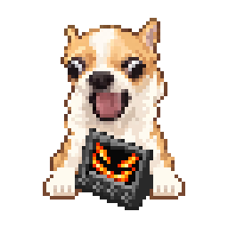

Windows x64 · {{VERSION}} Beta
Unofficial hardware.
Official software.
Your controller. Your Stream Deck profiles and plugins.
Hellgato Stream Dog connects the two.
No StreamDock app. No Python runtime. Node and Rust are bundled.

Hellgato Stream Dog
Manage devices, adapters and per-device backups from one tray app.
Download {{VERSION}} Beta for WindowsGet started
- Install the official Stream Deck app, then run Hellgato setup. It closes both apps automatically, removes its owned legacy Python runtime and keeps settings, profiles and plugins. Stream Deck reopens if it was running.
- Connect the controller over USB. Open Stream Dog, select the matching adapter, discover the device and connect it. Close other software using the same USB device.
- If needed, add the Network Device in Stream Deck at
127.0.0.1:5343and confirm pairing.
Closing the window keeps the core running in the tray. Use Quit to disconnect. Stream Deck continues to own your actions, profiles and plugins.
Devices
| Device | Output | Verification |
|---|---|---|
| Mirabox N4 Pro E | Complete 800 × 480 USB frame | Display, controls, screensaver and knob brightness verified on hardware |
| N4 / TS10N4 | Canvas split inside adapter | Included beta · Simulation only |
| 293S / TS115 | Canvas split inside adapter | Included beta · Simulation only |
Tested with Stream Deck 7.6.0.23012 and N4 Pro E firmware V4.N4 Pro E.02.010. Untested builds and firmware show warnings; native extensions still need compatible host structures.
Independent sessions are tested in simulation. Multiple physical devices and automatic reconnect after initial manual pairing remain unverified. Current Mirabox adapters allow one device per model family.
One composed stream per device
Device input travels through an independent Rust adapter and the Node core to Stream Deck. Returning key images, the continuous touch strip and screensavers compose into one retained canvas. N4 Pro receives complete USB frames; compatibility adapters split the canvas internally.
The Rust app manages devices, adapter packages, backups and the core lifetime. The canvas lives in memory, without an OS virtual monitor driver. Idle screens send no frames; active output is capped at 60 fps, keeping only the newest pending state.

Open the interactive diagram on its own. Dots illustrate direction, not measured traffic or latency.
Keep device management simple
- Devices in the sidebar. Select a device to inspect its model, virtual serial, connection and stream statistics.
- Independent adapters. Add an
.hgapackage without changing the core. External packages can execute native code; integrity checks do not establish malware safety. - Per-device backups. Save the selected device's profiles and identity together with shared plugins, icons, assets and settings. Choose an external folder, or manage named snapshots in the default location. Close Stream Deck for a consistent snapshot. Automatic restore is not included.
Before you install
Startup support adjusts Stream Deck process memory on launch, even with USB unplugged; StreamDeck.exe stays unchanged on disk. A genuine Stream Deck + cannot be used simultaneously with this shared layout patch.
Physical dial holds/releases, RGB lighting effects, vibration and standby/boot-logo uploads are not implemented. The current GUI uses Korean labels. This public beta does not activate automatic updates or replace the latest stable GitHub release.
Read the full compatibility notes for model-specific limits.